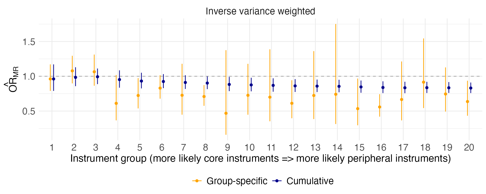

Increased serum HDL levels have been associated with a decreased risk of CAD in observational studies. However, randomized controlled trials have shown no meaningful protective effects of HDL-increasing drugs against CAD in the general population with normal HDL levels. In this study, we will use the Mendelian randomization analysis of HDL on CAD as a negative control example to showcase the utility of MR CORGE.
First, we load the example data included the MRCorge package. Both
exposure (HDL) and outcome (CAD) GWAS data were harmonized using the
TwoSampleMR package.
data("HDL_CAD")
head(HDL_CAD)
#> SNP effect_allele.exposure other_allele.exposure effect_allele.outcome
#> 1 rs10019888 A G A
#> 2 rs10087900 G A G
#> 3 rs102275 T C T
#> 4 rs103294 T C T
#> 5 rs10468017 T C T
#> 6 rs1047891 C A C
#> other_allele.outcome beta.exposure beta.outcome eaf.exposure eaf.outcome
#> 1 G 0.0270 -0.00865496 0.8364 0.8386
#> 2 A 0.0231 0.00148392 0.5607 0.5718
#> 3 C 0.0391 0.01101173 0.6280 0.6455
#> 4 C 0.0523 -0.00184047 0.1860 0.2152
#> 5 C 0.1179 0.01205890 0.2757 0.2847
#> 6 A 0.0269 0.01981174 0.6979 0.6965
#> remove palindromic ambiguous id.outcome chr.outcome pos.outcome se.outcome
#> 1 FALSE FALSE FALSE 7n4jWF 4 26061368 0.006765569
#> 2 FALSE FALSE FALSE 7n4jWF 8 143221248 0.005060500
#> 3 FALSE FALSE FALSE 7n4jWF 11 61790331 0.005160381
#> 4 FALSE FALSE FALSE 7n4jWF 19 54293995 0.006095529
#> 5 FALSE FALSE FALSE 7n4jWF 15 58386313 0.005427939
#> 6 FALSE FALSE FALSE 7n4jWF 2 210675783 0.005448003
#> pval.outcome info.outcome samplesize.outcome outcome mr_keep.outcome
#> 1 0.2008000 NA 1154330 outcome TRUE
#> 2 0.7693000 NA 1152300 outcome TRUE
#> 3 0.0328500 NA 1164000 outcome TRUE
#> 4 0.7627000 NA 1159810 outcome TRUE
#> 5 0.0263100 NA 1165600 outcome TRUE
#> 6 0.0002764 NA 1159050 outcome TRUE
#> pval_origin.outcome se.exposure pval.exposure info.exposure
#> 1 reported 0.0046 4.901e-08 NA
#> 2 reported 0.0036 2.174e-09 NA
#> 3 reported 0.0035 6.404e-28 NA
#> 4 reported 0.0044 3.995e-30 NA
#> 5 reported 0.0038 1.210e-188 NA
#> 6 reported 0.0039 8.730e-10 NA
#> samplesize.exposure exposure mr_keep.exposure pval_origin.exposure
#> 1 187077 exposure TRUE reported
#> 2 183672 exposure TRUE reported
#> 3 187085 exposure TRUE reported
#> 4 175917 exposure TRUE reported
#> 5 181223 exposure TRUE reported
#> 6 182043 exposure TRUE reported
#> id.exposure action mr_keep
#> 1 0GbyEu 2 TRUE
#> 2 0GbyEu 2 TRUE
#> 3 0GbyEu 2 TRUE
#> 4 0GbyEu 2 TRUE
#> 5 0GbyEu 2 TRUE
#> 6 0GbyEu 2 TRUENext, we use the mrcorge function to perform MR analyses
based on the core gene hypothesis. Specifically, we use the per-allele
effect size (specified with rank) to categorize instrument
variants into 20 groups (specified with K) and perform
inverse variance weighted MR (specified with mr_ivw) within
each group.
res <- mrcorge(HDL_CAD, rank='beta', K=20, method_list = c("mr_ivw"))
#> TwoSampleMR version 0.5.10
#> [>] New: Option to use non-European LD reference panels for clumping etc
#> [>] Some studies temporarily quarantined to verify effect allele
#> [>] See news(package='TwoSampleMR') and https://gwas.mrcieu.ac.uk for further details
#>
#> Warning:
#> You are running an old version of the TwoSampleMR package.
#> This version: 0.5.10
#> Latest version: 0.6.8
#> Please consider updating using remotes::install_github('MRCIEU/TwoSampleMR')
#> Analysing '0GbyEu' on '7n4jWF'
#> MR CORGE estimates:
#> id.exposure id.outcome outcome exposure method nsnp
#> 1 0GbyEu 7n4jWF outcome exposure Inverse variance weighted 6
#> b se pval Fstat group category
#> 1 -0.03943587 0.1004654 0.6946652 750.7501 1 Group-specific
#> Analysing '0GbyEu' on '7n4jWF'
#> obtaining group-specific estimates for instrument group 2 / 20 ...
#> Analysing '0GbyEu' on '7n4jWF'
#> obtaining group-specific estimates for instrument group 3 / 20 ...
#> Analysing '0GbyEu' on '7n4jWF'
#> obtaining group-specific estimates for instrument group 4 / 20 ...
#> Analysing '0GbyEu' on '7n4jWF'
#> obtaining group-specific estimates for instrument group 5 / 20 ...
#> Analysing '0GbyEu' on '7n4jWF'
#> obtaining group-specific estimates for instrument group 6 / 20 ...
#> Analysing '0GbyEu' on '7n4jWF'
#> obtaining group-specific estimates for instrument group 7 / 20 ...
#> Analysing '0GbyEu' on '7n4jWF'
#> obtaining group-specific estimates for instrument group 8 / 20 ...
#> Analysing '0GbyEu' on '7n4jWF'
#> obtaining group-specific estimates for instrument group 9 / 20 ...
#> Analysing '0GbyEu' on '7n4jWF'
#> obtaining group-specific estimates for instrument group 10 / 20 ...
#> Analysing '0GbyEu' on '7n4jWF'
#> obtaining group-specific estimates for instrument group 11 / 20 ...
#> Analysing '0GbyEu' on '7n4jWF'
#> obtaining group-specific estimates for instrument group 12 / 20 ...
#> Analysing '0GbyEu' on '7n4jWF'
#> obtaining group-specific estimates for instrument group 13 / 20 ...
#> Analysing '0GbyEu' on '7n4jWF'
#> obtaining group-specific estimates for instrument group 14 / 20 ...
#> Analysing '0GbyEu' on '7n4jWF'
#> obtaining group-specific estimates for instrument group 15 / 20 ...
#> Analysing '0GbyEu' on '7n4jWF'
#> obtaining group-specific estimates for instrument group 16 / 20 ...
#> Analysing '0GbyEu' on '7n4jWF'
#> obtaining group-specific estimates for instrument group 17 / 20 ...
#> Analysing '0GbyEu' on '7n4jWF'
#> obtaining group-specific estimates for instrument group 18 / 20 ...
#> Analysing '0GbyEu' on '7n4jWF'
#> obtaining group-specific estimates for instrument group 19 / 20 ...
#> Analysing '0GbyEu' on '7n4jWF'
#> obtaining group-specific estimates for instrument group 20 / 20 ...
#> obtaining cumulative estimates for instrument group 1 / 20 ...
#> Analysing '0GbyEu' on '7n4jWF'
#> obtaining cumulative estimates for instrument group 2 / 20 ...
#> Analysing '0GbyEu' on '7n4jWF'
#> obtaining cumulative estimates for instrument group 3 / 20 ...
#> Analysing '0GbyEu' on '7n4jWF'
#> obtaining cumulative estimates for instrument group 4 / 20 ...
#> Analysing '0GbyEu' on '7n4jWF'
#> obtaining cumulative estimates for instrument group 5 / 20 ...
#> Analysing '0GbyEu' on '7n4jWF'
#> obtaining cumulative estimates for instrument group 6 / 20 ...
#> Analysing '0GbyEu' on '7n4jWF'
#> obtaining cumulative estimates for instrument group 7 / 20 ...
#> Analysing '0GbyEu' on '7n4jWF'
#> obtaining cumulative estimates for instrument group 8 / 20 ...
#> Analysing '0GbyEu' on '7n4jWF'
#> obtaining cumulative estimates for instrument group 9 / 20 ...
#> Analysing '0GbyEu' on '7n4jWF'
#> obtaining cumulative estimates for instrument group 10 / 20 ...
#> Analysing '0GbyEu' on '7n4jWF'
#> obtaining cumulative estimates for instrument group 11 / 20 ...
#> Analysing '0GbyEu' on '7n4jWF'
#> obtaining cumulative estimates for instrument group 12 / 20 ...
#> Analysing '0GbyEu' on '7n4jWF'
#> obtaining cumulative estimates for instrument group 13 / 20 ...
#> Analysing '0GbyEu' on '7n4jWF'
#> obtaining cumulative estimates for instrument group 14 / 20 ...
#> Analysing '0GbyEu' on '7n4jWF'
#> obtaining cumulative estimates for instrument group 15 / 20 ...
#> Analysing '0GbyEu' on '7n4jWF'
#> obtaining cumulative estimates for instrument group 16 / 20 ...
#> Analysing '0GbyEu' on '7n4jWF'
#> obtaining cumulative estimates for instrument group 17 / 20 ...
#> Analysing '0GbyEu' on '7n4jWF'
#> obtaining cumulative estimates for instrument group 18 / 20 ...
#> Analysing '0GbyEu' on '7n4jWF'
#> obtaining cumulative estimates for instrument group 19 / 20 ...
#> Analysing '0GbyEu' on '7n4jWF'
#> obtaining cumulative estimates for instrument group 20 / 20 ...
#> Analysing '0GbyEu' on '7n4jWF'Based on the core instruments, the MR CORGE estimate shows that serum HDL level may not be causally associated with CAD. As we add more peripheral instruments, MR results suggest protective effects of HDL on CAD risk, likely due to horizontal pleiotropy.
plot_mrcorge(res, scale='exp')